trace_block▌
A transparent, live tracer for AI coding-agent event streams — every prompt, thought, tool call and backend response, as it happens.

Why#
Agents in non-interactive mode are silent while they work: the event stream goes to a pipe, and a two-minute run looks frozen. Reading the raw NDJSON afterwards means wading through hundreds of streaming deltas. trace_block turns that stream into readable blocks while it runs — and never hides anything.
▌Cell-by-cell browser
One cell per block, grouped by turn. Move with j/k, open with l, search with /.
⇄Backend visible
Response ids, served-by model, raw stop reasons, token usage incl. reasoning and cache, cost, diagnostics.
⚙What the model was given
The system prompt and the tool definitions the agent disclosed to the model, as recorded.
★Final answer marked
From the recorded stop reason. a jumps to it from anywhere.
⎘Byte-exact passthrough
stdin → stdout untouched; -o saves the raw stream; --trajectory exports the messages.
🖼Images, drawn
Images sent to vision models are drawn with kitty graphics or sixel when the terminal supports it.
↺Session logs
Reads the logs pi and Claude Code keep on disk — browse or replay any past session.
◇Sequence diagrams
A live Mermaid diagram of user ↔ agent ↔ tools, rendered in-process — no browser, no Node.
Quick start#
Pipe the agent's machine-readable stream into trace_block. The format is detected from the events — no flag needed.
pi --mode json -p "Summarise the files in ./docs" | trace_block -o run.json
Choose the model with --model provider/id (append :high for a thinking level) and the tools with -t read,bash, -xt write or -nt. Don't end the pipe with | tee run.json — tee prints the raw JSON into the same terminal; -o saves it instead.
claude -p "Summarise the files in ./docs" \ --output-format stream-json --verbose --include-partial-messages \ | trace_block -o run.jsonl
--verbose is required for stream-json in print mode; --include-partial-messages gives live deltas and per-message stop reasons. For a clean, reproducible run add --setting-sources "" (no user hooks or CLAUDE.md), --strict-mcp-config and --tools "Read Grep Glob". More →
trace_block browse run.json # reopen a saved run trace_block browse "$(ls -t ~/.claude/projects/*/*.jsonl | head -1)" # newest Claude Code session trace_block replay run.json | trace_block # re-play with realistic timing cat run.json | trace_block -q --trajectory run.md >/dev/null # export a trajectory
The interactive browser#
The default view when stderr is a terminal. Every block of the run is a cell; cells are grouped under TURN headers that carry the model; the selected cell has a cyan bar on the left.

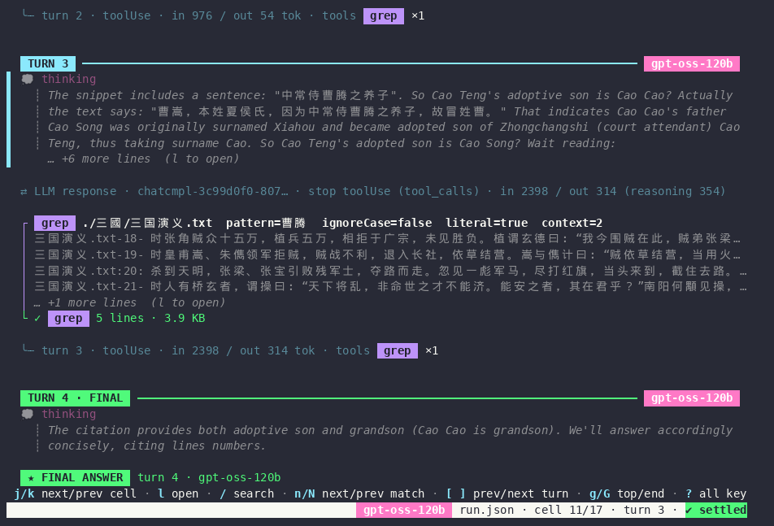
grep call with its output preview and ✓ status, the ⇄ LLM response backend line, the per-turn footer, and the green TURN 4 · FINAL header.| Key | In the list | In the detail view (after l) |
|---|---|---|
| j k | next / previous cell | scroll |
| l / Enter | open the cell's full content | — |
| h / Esc | — | back to the list |
| J K | — | next / previous cell |
| / | search (smartcase, CJK input works) | search inside the cell |
| n N | next / previous matching cell | next / previous matching line |
| [ ] | previous / next turn | — |
| g G | top / end (G follows new output) | top / bottom |
| a | jump to the ★ final answer | — |
| t · b | hide / show thinking · backend cells | — |
| f | toggle follow mode | — |
| ? | key reference | key reference |
| q | quit — a live stream keeps being consumed so the producer and -o finish | back |
Detail view — the full, recorded content
l opens a cell: complete tool arguments and output, the full thinking text, the system prompt, or the recorded JSON of a message — syntax-colored, in the original key order.

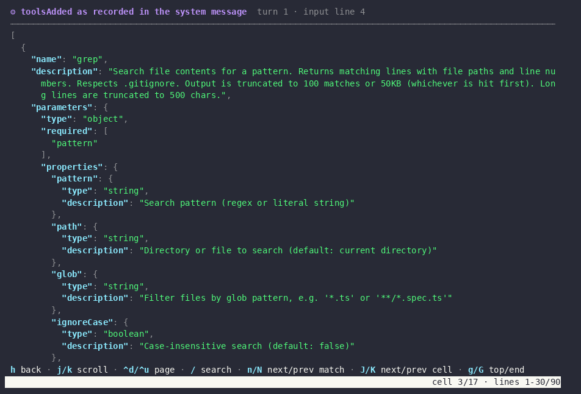
toolsAdded), exactly as recorded.Search

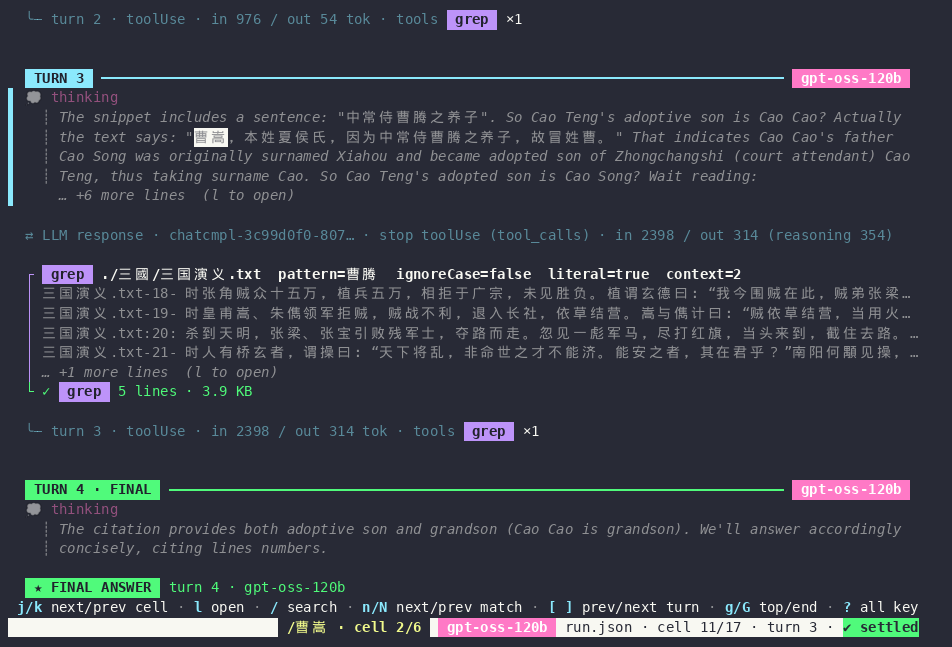

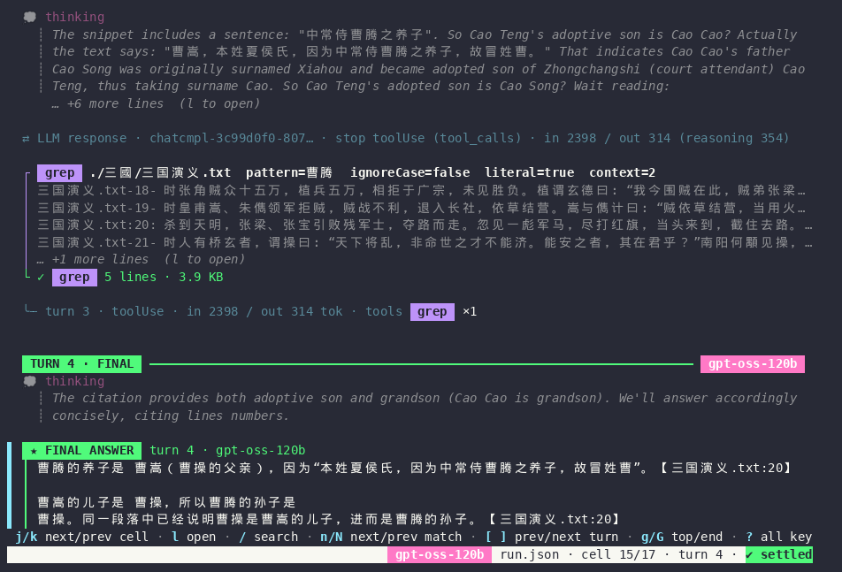

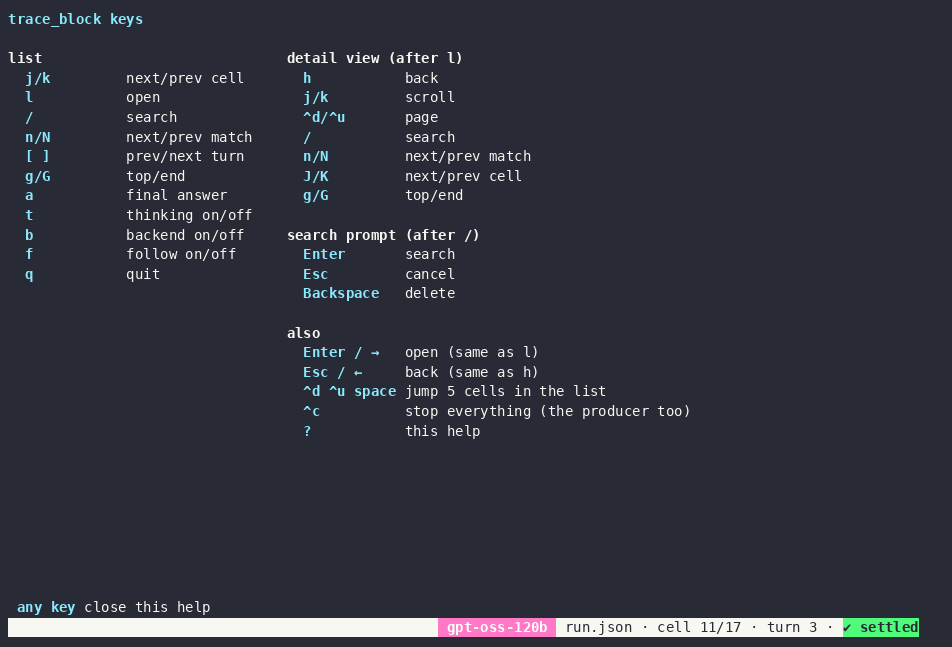
? all keys.Cells#
What each block shows. Every cell's detail view holds the recorded data behind it.

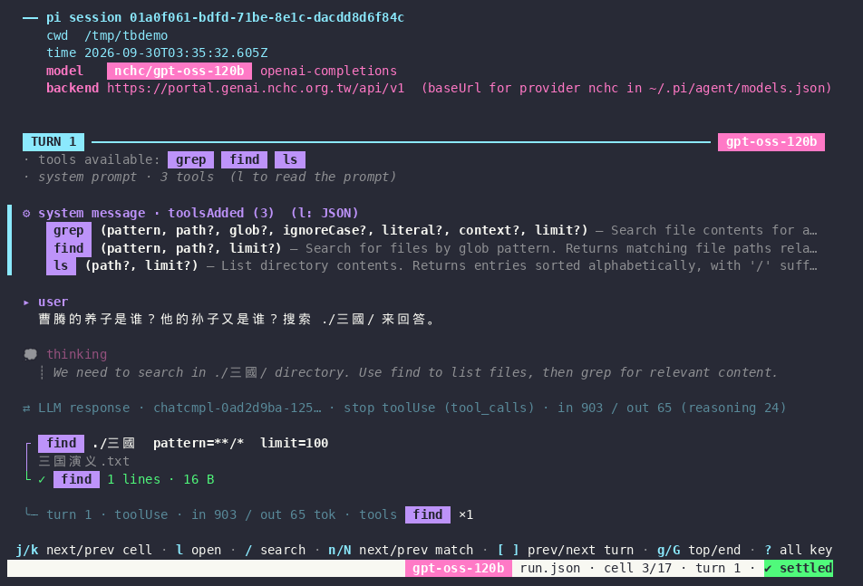
baseUrl, labelled as coming from ~/.pi/agent/models.json), tools available, the tool definitions cell and the prompt.| Cell | Content |
|---|---|
━━ pi session / ━━ claude session | session id, cwd, model; pi: provider baseUrl (source-labelled); Claude: version, permission mode |
· tools available · ⚙ | the tools offered to the model — pi: full JSON schemas; Claude: names from system/init |
▸ user | the prompt (images as [image · …]) |
💭 thinking | the model's thinking as recorded (empty when the request asked for it to be redacted) |
● assistant · ★ FINAL ANSWER | answer text rendered as Markdown |
┌ tool … └ ✓/✗ | tool badge, arguments, output preview, status, duration, size |
⇄ LLM response | per LLM call: response id, served-by model, stop reason (+ raw provider reason), tokens, cost, effort, diagnostics |
⚠ retry · ✗ model error | pi auto-retries and failed attempts |
✗ permission denied · · system/… | Claude Code system events (hooks, thinking-token estimates, rate limits) |
| summary | pi: turns, tool calls, retries, token totals; Claude: the recorded result (duration, turns, cost, usage) |
Claude Code#
Claude Code's print mode (claude -p … --output-format stream-json) is read the same way. Each assistant message is one API request and becomes one turn.

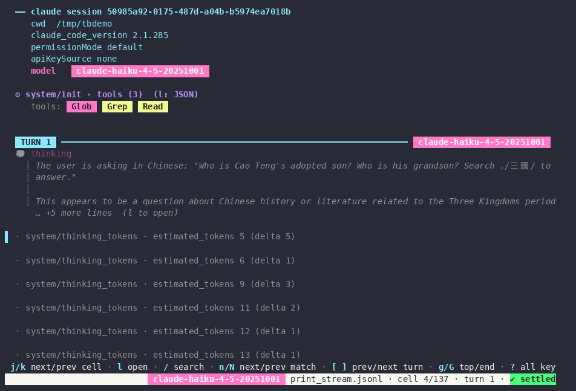
system/init (tool names only — that's all the stream carries), thinking, and system/thinking_tokens events with their recorded estimates.
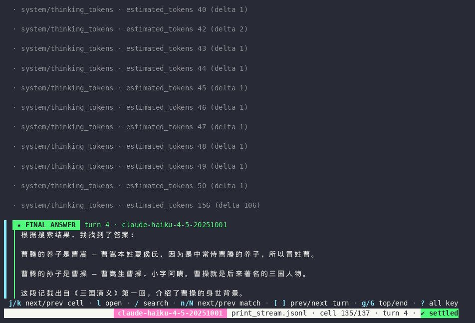
stop end_turn) and the recorded result: duration, turns, cost, usage, thinking tokens.| Claude Code event | Shown as |
|---|---|
system/init | session cell + ⚙ system/init · tools (N) |
stream_event deltas | live thinking / text / tool input |
assistant (one block each) | the complete blocks, authoritative over the deltas |
user tool_result | tool result; is_error → ✗ |
stream message_delta | ⇄ LLM response with stop reason and usage ((not in stream) without partial messages) |
system/permission_denied | red cell |
result | summary |
Empty thinking? When a request carries the redact-thinking beta the thinking blocks hold only a signature. Whether Claude Code sends it depends on the mode and version — in a capture with 2.1.285 the interactive CLI did and claude -p did not. The model thinks either way; see the thinking-token cells.
Permission denied in -p? Print mode can't ask for approval. Offer only the tools you want (--tools), allow specific commands (--allowedTools "Bash(ls *)"), and use --setting-sources "" if a user hook rewrites commands.
Session logs#
Both agents save every session to disk. trace_block reads those files directly — in the browser, the scroll view, --trajectory and replay.

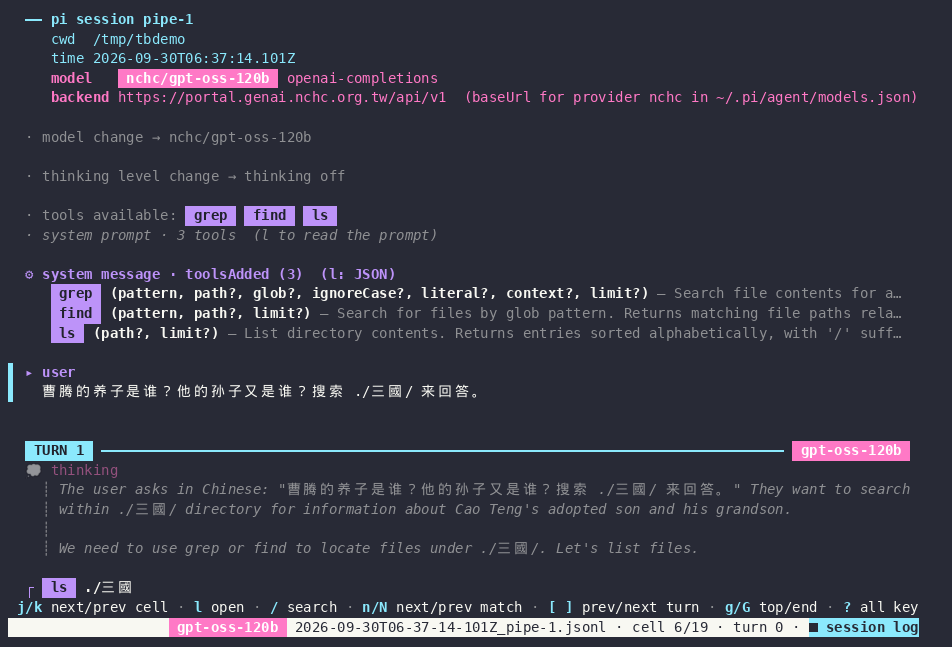
■ session log.| Agent | Location | Shows |
|---|---|---|
| pi | ~/.pi/agent/sessions/--<cwd>--/<ts>_<id>.jsonl | system prompt, tool definitions, prompt, every assistant message (thinking, text, tool calls, backend metadata), tool results, model changes |
| Claude Code | ~/.claude/projects/<cwd>/<session-id>.jsonl | everything the stream has, plus the prompt, each message's recorded stop reason, and the full system prompt (attachment/prompt_snapshot) |
A session log holds complete messages, not a live stream: no deltas and no execution timing are recorded, so none are shown, and the end is end of session log rather than "unfinished". Claude transcripts also contain account metadata (e.g. attachment/session_context) — mind that before sharing one.
Images#
Images sent to a vision model — attached to the prompt or returned by a tool that reads an image file — are never printed as base64.

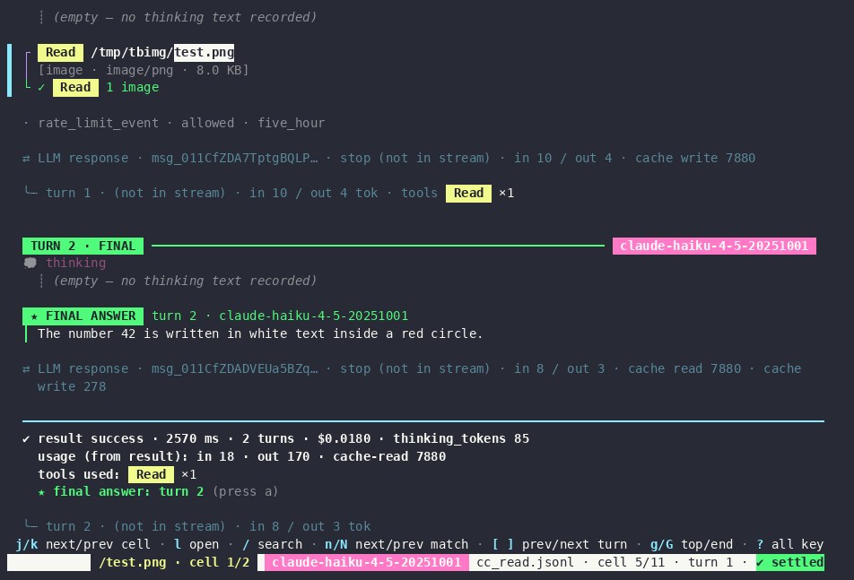
1 image).
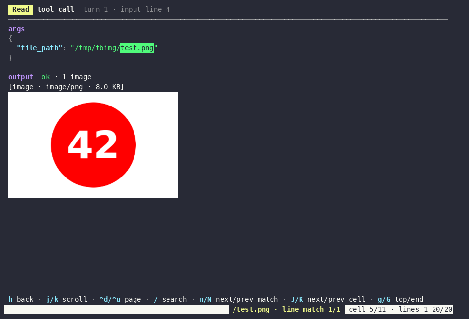
--images | Behaviour |
|---|---|
auto (default) | asks the terminal: kitty graphics (kitty, Ghostty, WezTerm) → kitty; sixel in DA1 (foot, Windows Terminal ≥ 1.22, …) → sixel; otherwise placeholders only |
kitty · sixel · iterm | force a protocol |
off | placeholders only |
PNG, JPEG, GIF and WebP are decoded; images are never enlarged; the scroll view draws thumbnails (≤ 60 × 12 cells). No graphics are written when stderr is not a terminal.
Sending an image in pipe mode
# pi: attach with @file (the model must accept images) pi --model provider/vision-model --mode json -p @photo.png "What is in this picture?" | trace_block # Claude Code: let it read the file claude -p "Look at ./photo.png — what is in it?" --tools Read --allowedTools Read \ --output-format stream-json --verbose | trace_block
pi and custom models: pi only sends images to models declared image-capable. For a model in ~/.pi/agent/models.json without "input": ["text", "image"], the request carries the text (image omitted: model does not support images) instead — while the session log and the stream still record the image. Verified with a request-logging proxy. Fix: { "id": "…", "input": ["text", "image"] }.
Output files#
The raw stream is always passed through byte-for-byte (to stdout when it is a pipe or file — never into a terminal).
| Option | Writes |
|---|---|
-o FILE | the raw input stream, byte-for-byte, flushed per line |
--trajectory FILE.md | every recorded message as Markdown — system prompt sections and tool definitions, user, each assistant message (all recorded fields, thinking, text, tool calls), each tool result, including failed attempts |
--trajectory FILE.jsonl | the message lines, byte-exact: pi → session + every message_end (session logs: every message); Claude Code → system/init, assistant, user, result |
--mmd · --svg · --png PATH | the live Mermaid sequence diagram (pi streams), rewritten atomically as events arrive |
An excerpt of a Markdown trajectory:
## turn 2
### assistant
- provider: `nchc`
- model: `gpt-oss-120b`
- stopReason: `toolUse`
- rawStopReason: `tool_calls`
- usage: `{"input":1013,"output":66,"reasoning":12,…}`
**toolCall** · grep · `chatcmpl-tool-b8536949b89d835b`
```json
{ "path": "./三國/三国演义.txt", "pattern": "曹騰", "context": 2, "limit": 20 }
```
### toolResult · grep · `chatcmpl-tool-b8536949b89d835b` · isError: falseSequence diagram & live viewer#
For pi streams, trace_block keeps a Mermaid sequence diagram of user ↔ agent ↔ tools up to date, rendered in-process with mermaid-rs-renderer — no browser, no Node.
# pane A pi --mode json -p "…" | trace_block --mmd /tmp/run.mmd # pane B: redraws in place on every change (kitty / sixel / iTerm2 / character cells) trace_block view /tmp/run.mmd

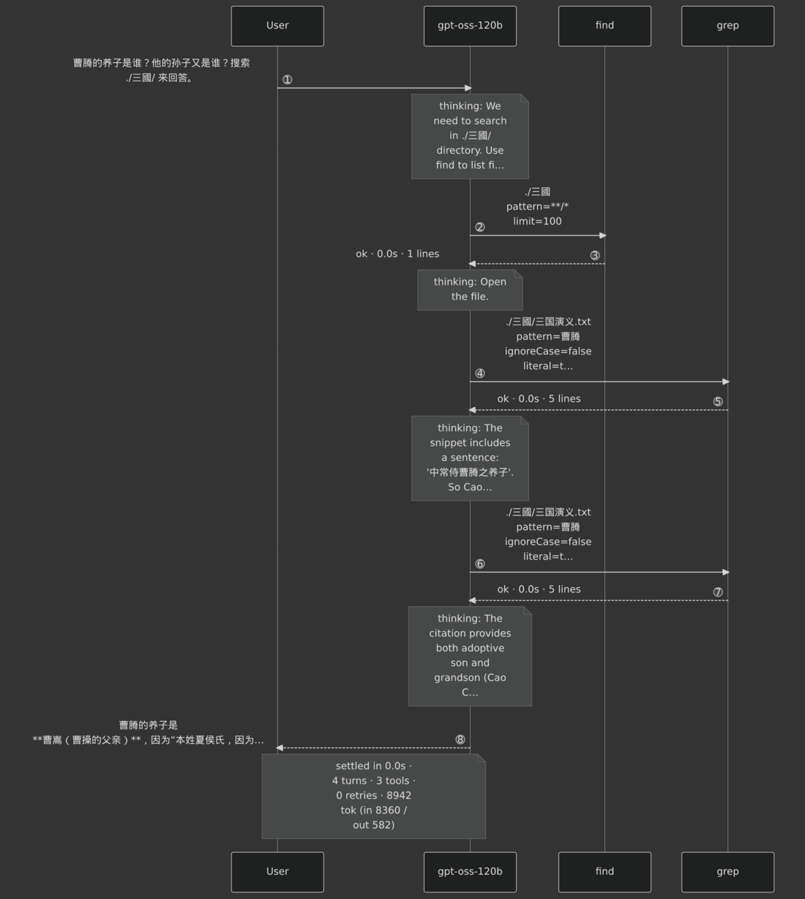
--png output (--theme dark) for the demo run.
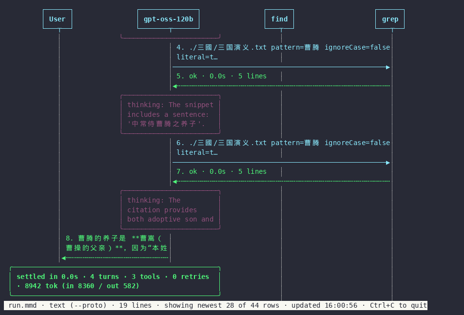
trace_block view --proto text: the fallback for terminals without graphics.Scroll view#
--scroll (or any non-terminal stderr) prints append-only blocks — handy for logs and CI. Colors and in-place streaming only on a TTY; plain text otherwise.

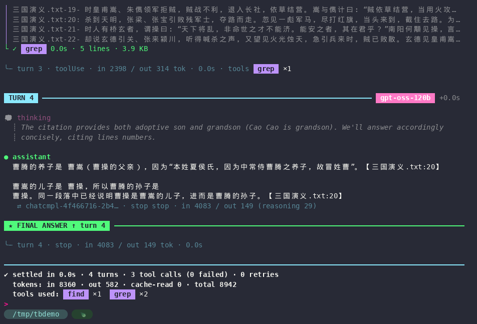
★ FINAL ANSWER ↑ marker, summary with tool badges.Transparency#
The design rule: show what the stream records — nothing reconstructed, nothing guessed.
No reconstructed values
Nothing like "this request probably carried N messages". If it isn't in the stream, it isn't in the view.
No guessed metrics
No self-measured TTFT or tokens/s posing as backend data. Tool durations are measured by trace_block on live streams only.
Absence is stated
stop (not in stream), (empty — no thinking text recorded), end of session log.
Sources are labelled
The one outside fact — a provider's baseUrl — says it comes from ~/.pi/agent/models.json.
Every cell opens (l) to the recorded JSON, unmodified except for pretty-printing with the original key order.
How it works#
A reader thread takes stdin line by line. Raw bytes go out first, untouched; the parsed event then feeds the views.
Source layout, event formats, testing (unit, CLI, terminal-emulator and multiplexer tests) and the release process are in DEVELOPMENT.md.
Install#
Download the archive for your platform from the Releases page — x86_64/aarch64 Linux and macOS, with SHA256SUMS.
tar xzf trace_block-v*-x86_64-unknown-linux-gnu.tar.gz install trace_block-*/trace_block ~/.local/bin/ trace_block --version
cargo install --git https://github.com/king0980692/trace_block --locked
git clone https://github.com/king0980692/trace_block cd trace_block cargo build --release # → target/release/trace_block
Rust ≥ 1.90. Linux and macOS (POSIX terminal handling). Rendering SVG/PNG and images uses the system's fonts and decoders built in.
Troubleshooting#
| Symptom | Cause and fix |
|---|---|
| The screen fills with raw JSON | Something prints stdout into the terminal — usually | tee FILE. Use -o FILE (or | tee FILE >/dev/null). |
✗ permission denied · Bash (Claude -p) | Print mode can't ask. Use --tools / --allowedTools; with a hook that rewrites commands, run with --setting-sources "". |
💭 thinking (empty …) (Claude) | The request asked for redacted thinking (redact-thinking beta). See the thinking-token cells. |
pi shows thinking although thinking off | off means pi doesn't request reasoning; models that always reason (e.g. gpt-oss) still return it. |
| The vision model says it can't see the image (pi) | Declare "input": ["text", "image"] for the model in models.json. Details → |
| No image drawn | The terminal or multiplexer doesn't pass kitty/sixel graphics. Check trace_block view --probe; force with --images kitty|sixel. |